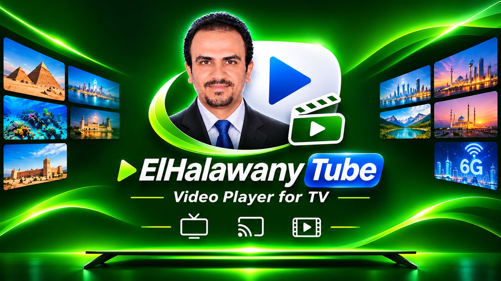

Your YouTube channels on the TV and in the car
ElHalawany Tube is a video app for Android TV and Android car screens. It shows the latest videos from the YouTube channels you subscribe to, and plays them with YouTube's official embedded player.

Two apps
📺 ElHalawany Tube for TV
Made for the TV remote: family profiles, kids profiles with a parent PIN and daily time limits, "new since your last visit", Arabic categories, sending a video from your phone, and a venue mode for mosques, companies, malls, cafes and restaurants.
🚗 ElHalawany Tube for Car
Made for touch screens in the car: the video in a box next to a list of videos from your channels, big buttons, steering-wheel media buttons, "long trip" and "short ride" lists, and voice commands.
How it uses your Google account
Signing in with Google is optional. When you sign in, the app asks for:
- Read-only access to your YouTube account (
youtube.readonly), to list your subscriptions and playlists. The app can't post, comment, like, subscribe or change anything. - Only the files it creates in your Google Drive (
drive.file): one small file, "ElHalawany Tube - continue watching.json", that saves where you stopped a video so you can continue on your other device. The app can't see, open or change any other file in your Drive.
Videos are played only through YouTube's official player, with YouTube's ads and controls. Details are in the privacy policy.
Not affiliated with YouTube
ElHalawany Tube uses YouTube API Services. It is an independent app and is not made, endorsed or sponsored by YouTube or Google. YouTube is a trademark of Google LLC.
بالعربي
ElHalawany Tube تطبيق لمشاهدة فيديوهات قنواتك على شاشات التلفزيون والسيارة، بمشغّل يوتيوب الرسمي. تسجيل الدخول بحساب جوجل اختياري، وصلاحياته قراءة فقط لحساب يوتيوب، ومعاها صلاحية لملف واحد بيعمله التطبيق في درايف بتاعك، علشان تكمّل الفيديو من جهاز لجهاز. التطبيق مستقل، ومش تابع لشركة يوتيوب أو جوجل.